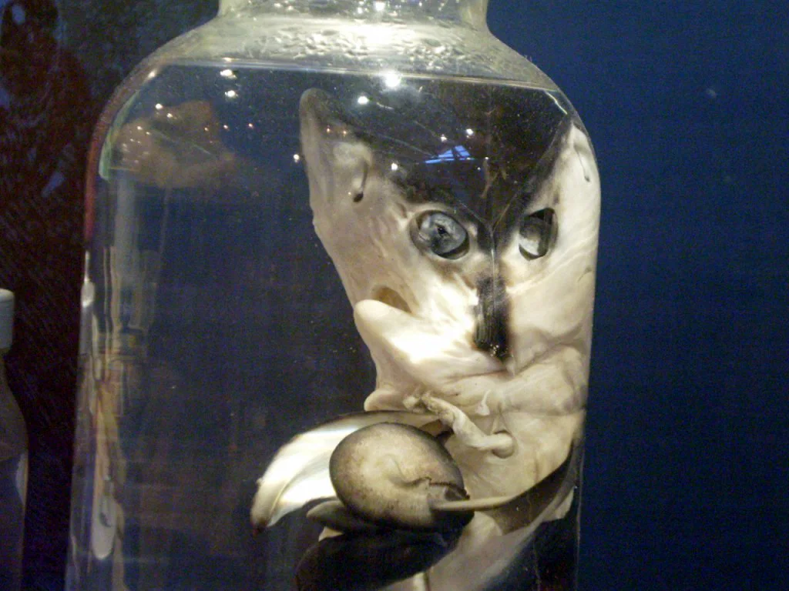
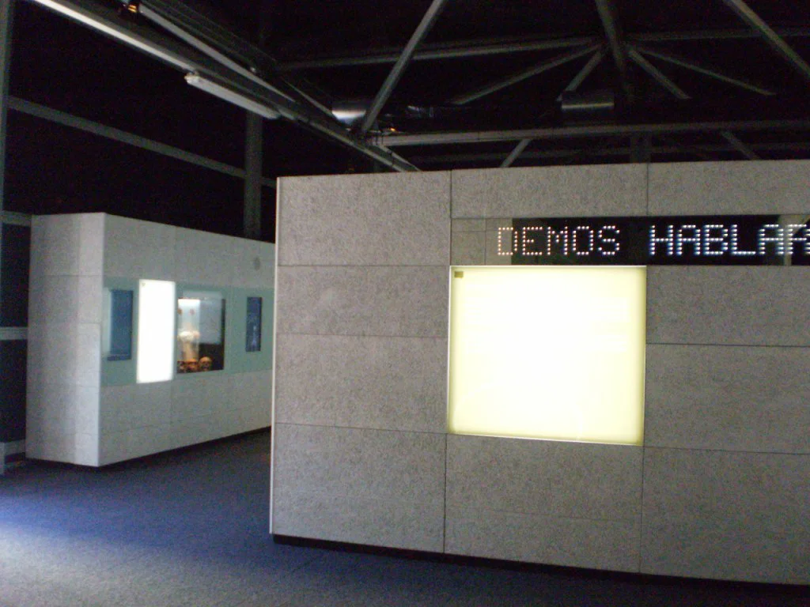
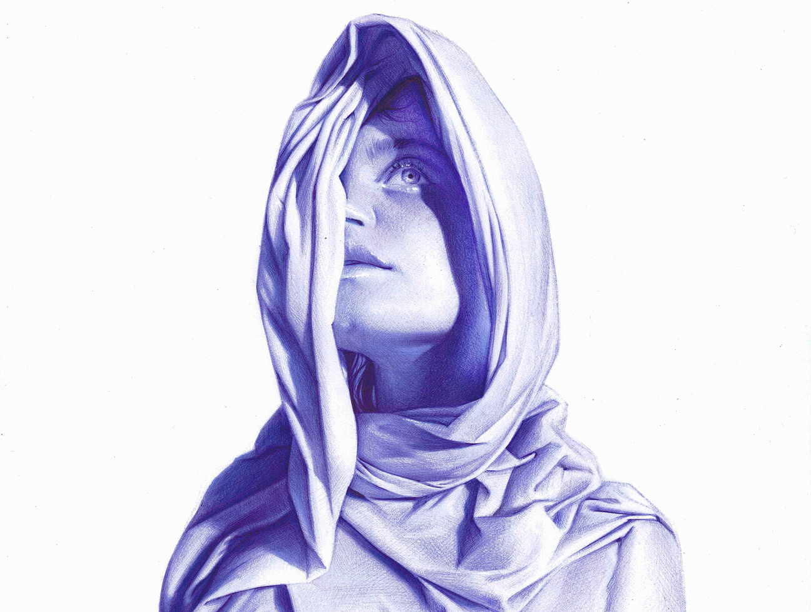
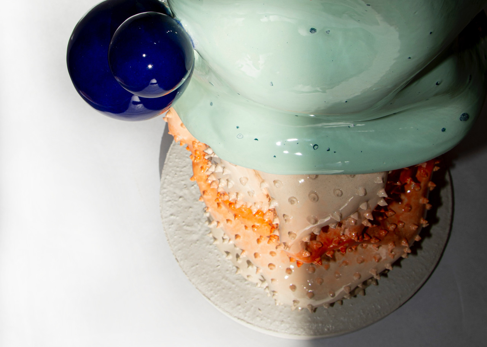
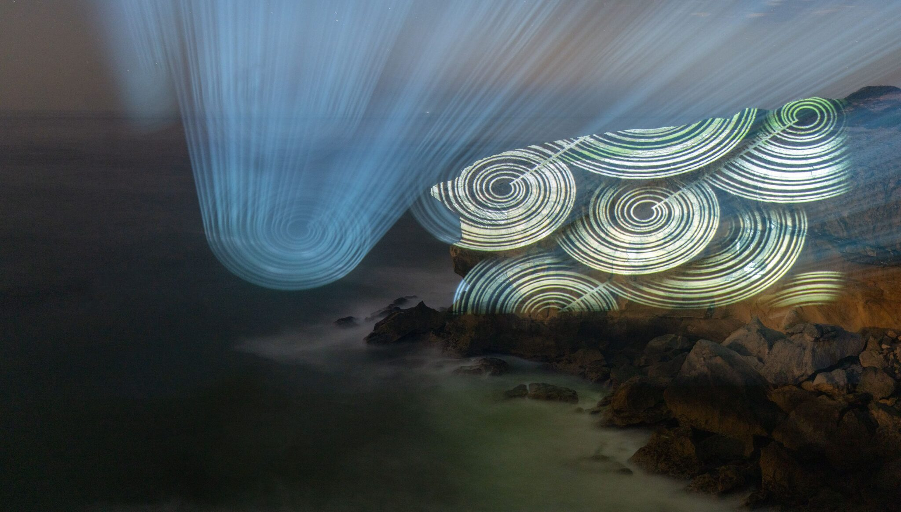

Exposiciones artísticas y culturales que marcan la agenda de Gijón
Gijón se ha consolidado como un punto de referencia en el ámbito cultural gracias a su variada oferta de exposiciones artísticas. Este año, la ciudad acoge muestras que abarcan desde arte contemporáneo hasta exposiciones históricas, reflejando su rica herencia cultural. Espacios como el Jardín Botánico Atlántico y el Centro Cultural Antiguo Instituto son anfitriones de propuestas innovadoras que invitan al espectador a reflexionar sobre temas actuales y su impacto en la sociedad.
La agenda cultural de Gijón propone actividades interactivas, conferencias y talleres, convirtiendo cada exposición en una experiencia única.
Exposición Monstruos Marinos
La Exposición Monstruos Marinos en Gijón es una experiencia fascinante que no debes perderte.
Ubicada en el antiguo edificio de la rula, al final del puerto deportivo, esta muestra ofrece un
vistazo a criaturas extraordinarias que habitan en las profundidades del océano. La viajera Lala
comenta sobre la exposición, resaltando que «tratamos sobre animales increíbles que parecen
auténticos monstruos, procedentes de las profundidades del océano». Este evento, disponible hasta el
25 de octubre, es de entrada gratuita y destaca la diversidad de especies marinas, con exhibiciones
de un gigantesco calamar de más de 4 metros, esqueletos de ballenas y hasta tiburones con dos
cabezas.
Además de las impresionantes muestras físicas, la exposición cuenta con numerosos paneles
explicativos que conectan la mitología relacionada con estos seres marinos con la realidad
científica. Lala menciona que, tras visitar la exposición, «después de esto, no sé si volveré a
bañarme en el mar», una frase que refleja la asombrosa y a la vez inquietante naturaleza de estos
seres. Es un viaje al mundo de los monstruos marinos que combina aprendizaje y admiración por la
biodiversidad de nuestro planeta.

Érase una vez… ¡el habla!
La exposición «Érase una vez… ¡el habla!» en Gijón es una experiencia única que atrapa tanto a
grandes como a pequeños. Patrocinada por la obra social La Caixa, se sitúa en una carpa en los
jardines del Náutico, justo frente a la playa de San Lorenzo. La viajera Lala destaca que se trata
de una «exposición muy interesante y didáctica», ideal para visitar con niños. La interactividad y
las explicaciones accesibles permiten que todos comprendan mejor el fascinante mundo del lenguaje.
La muestra se divide en tres áreas principales que exploran la comunicación en diferentes contextos.
Lala menciona que el recorrido incluye «hombres prehistóricos» y «un ordenador», además de paneles
ilustrativos. La primera sección se centra en las distintas formas de comunicación, desde las
interacciones celulares hasta la verbal.
También se indaga en el origen del habla, preguntándose por qué solo los humanos pueden hablar y
cómo surgió este fenómeno en nuestros antepasados. Por último, se aborda la evolución del lenguaje,
analizando cómo ha cambiado la comunicación en la era moderna, incluyendo redes sociales y mensajes
de texto. Sin duda, «Érase una vez… ¡el habla!» es una oportunidad perfecta para aprender y
disfrutar en un ambiente envolvente y educativo.

Galería del evento



